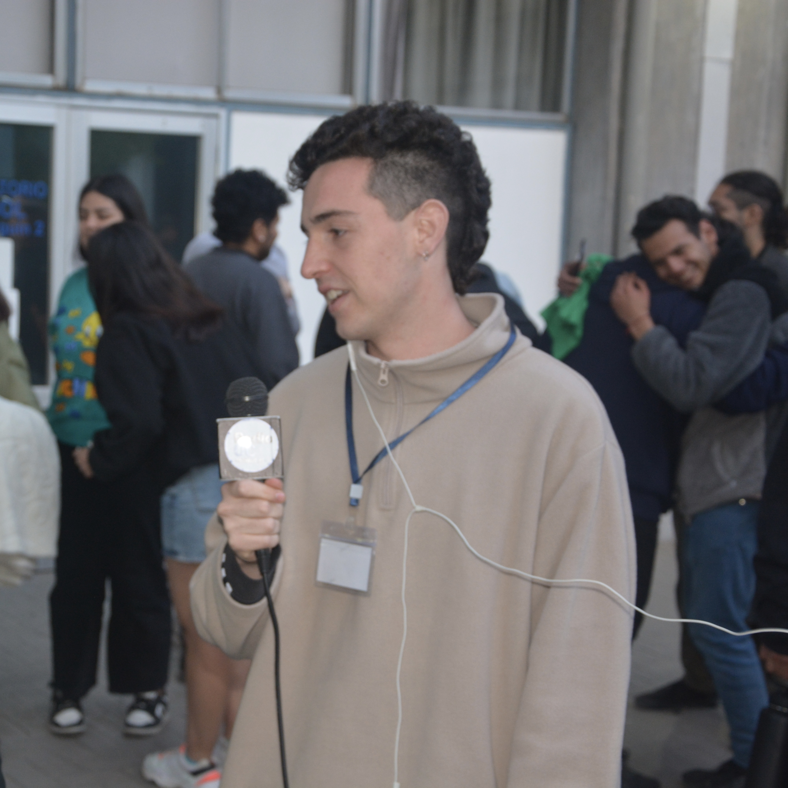

Nombre: Luka Villalabeitia Miller
Correo: luka.villalabeitia@gmail.com
Celular: +56 9 61390526
Graduado del Colegio Saint George en 2019
Estudiante de tercer año de Periodismo en la Universidad Católica
Certificado de Inglés nivel B2 de la Universidad de Cambridge
Link: Perfil de TikTok